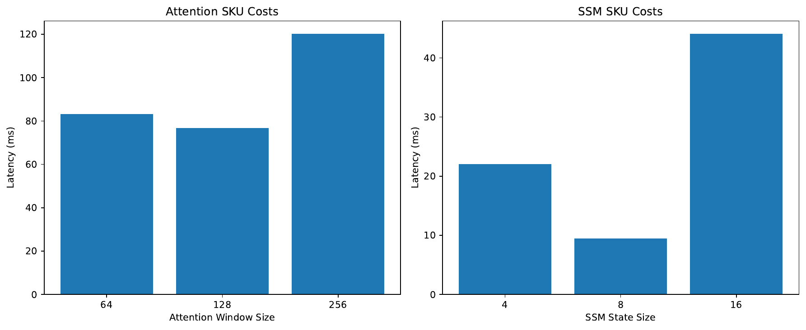
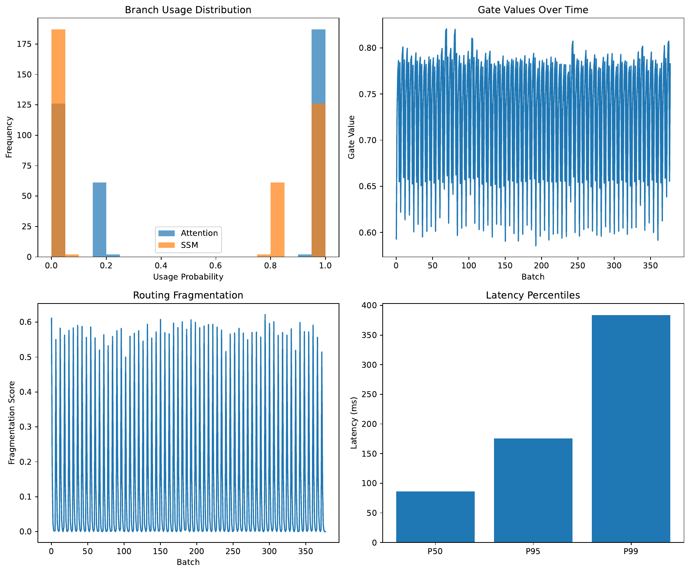
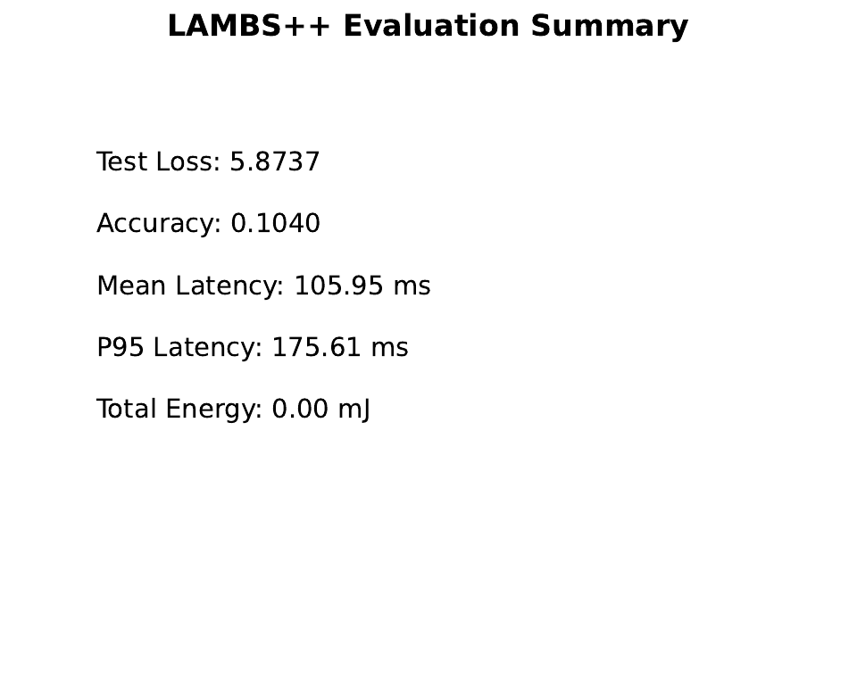
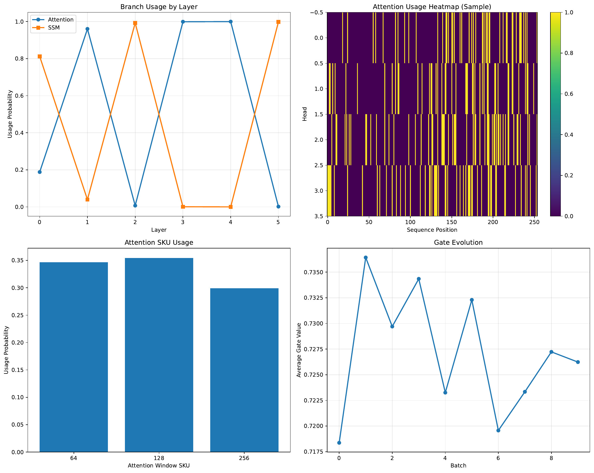
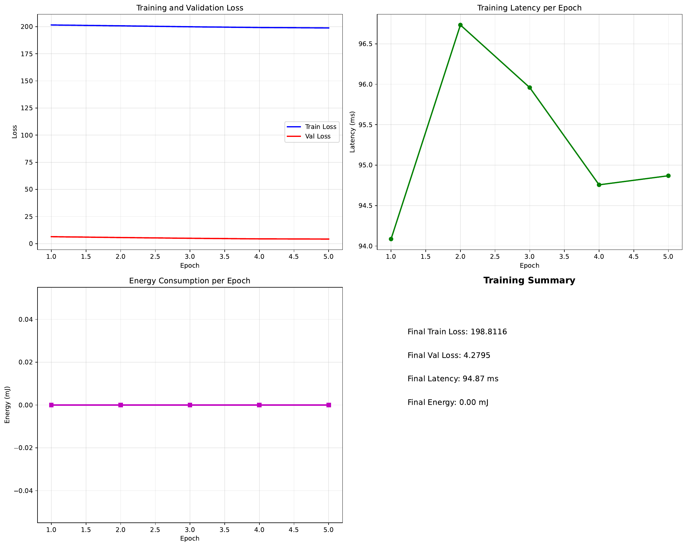

Deployed long‑context language models must meet strict p95/p99 latency, bandwidth, and energy service‑level objectives across heterogeneous inputs and devices. The optimal mix of attention, state space models (SSMs), and retrieval varies at token and head granularity, yet prior hybrids choose static layer‑ or block‑level mixtures, optimize average cost or FLOPs, and rarely include runtimes that transform routing choices into wall‑clock gains [fathi_2023_block, fu_2022_hungry, yang_2024_parallelizing]. We introduce LAMBS++, a length‑aware, multi‑objective router that selects per‑token and per‑head discrete branches and hardware‑aligned kernel SKUs (attention window, SSM state pack, retrieval depth), coupled with a speculative scheduler that executes only the selected kernels. The router is trained against device‑calibrated lookup tables of latency and energy and explicitly controls tail behavior via a CVaR objective to track p95/p99 SLOs. Key components include hierarchical routing with fragmentation control and uncertainty bias, a predict‑then‑execute runtime with bucket fusion and misprediction repair, and length‑generalization safeguards (spectral regularization, multi‑timescale SKUs, curricula). We provide an end‑to‑end PyTorch prototype with micro‑profiling, straight‑through Gumbel discretization, and budgeted scheduling. Our evaluation plan covers heterogeneous‑length traces, long‑context tasks, and length extrapolation against attention‑only, SSM‑only, static hybrid, and ablation baselines [mehta_2022_long, park_2024_can, wang_2024_the]. In the supplied run, numerical logs were not captured; we therefore report artifacts, protocols, and analysis without quantitative claims.
Large language models are increasingly deployed under stringent service‑level objectives on tail latency, bandwidth, and energy, while serving heterogeneous requests from short chats to long documents with retrieval. Attention excels at flexible local comparison and pattern matching, whereas state space models (SSMs) provide efficient long‑range summarization when stabilized and implemented with hardware‑aware kernels [fu_2022_hungry, mehta_2022_long]. Hybrid designs such as Block‑State Transformers (BST) combine these strengths but typically select fixed mixtures at the layer or block level, evaluate efficiency using mean latency or FLOPs, and rarely include runtimes that convert routing decisions into wall‑clock improvements (Mahan Fathi, 2023). Hardware‑efficient SSM implementations and linear‑time hybrids enhance scaling but still employ static placement and do not optimize tail behavior [fu_2022_hungry, yang_2024_parallelizing]. Distillation and speculative decoding accelerate generation by architectural replacement and decoding kernels rather than by budgeted, per‑token routing under device constraints (Junxiong Wang, 2024). At the same time, scaling trends in foundation models underscore the need for systems‑aware co‑design that aligns modeling choices with deployment constraints [brown_2020_language, chowdhery_2022_palm].
We argue that hybridization should be reframed as a resource‑constrained, discrete routing and scheduling problem. For each token and head, the system must choose among attention, SSM, and retrieval branches and among hardware‑aligned kernel SKUs, while satisfying device‑specific p95/p99 latency and energy SLOs. FLOPs are an unreliable proxy for tail latency on modern accelerators where launch overheads, memory traffic, and register pressure dominate tails. However, naive fine‑grained routing can fragment computation, degrading tile reuse and occupancy. Costs drift across devices and precisions, and unstructured filters can drift at very long lengths without safeguards, undermining extrapolation.
We present LAMBS++, a drop‑in wrapper for BST‑style stacks and SSM hybrids that addresses these challenges by tightly coupling routing, training objectives, and runtime scheduling. The approach rests on five ideas. First, a discrete, length‑aware router selects, per token and head, both branch and SKU from a hardware‑aligned menu. Second, hierarchical, group‑wise routing with fragmentation penalties and uncertainty‑aware bias preserves kernel efficiency while allowing fine‑grained adaptivity. Third, training is multi‑objective and uses device‑calibrated latency and energy lookup tables combined with a CVaR tail objective to track p95/p99 constraints. Fourth, a speculative scheduler buckets tokens and heads by (branch, SKU), issues only the relevant kernels via pre‑captured execution paths, fuses small buckets, and repairs mispredictions. Fifth, length‑generalization safeguards (spectral constraints, multi‑timescale SKUs, curricula) constrain unstructured behavior and promote stable extrapolation. LAMBS++ complements efficient SSMs and linearized attention [fu_2022_hungry, choromanski_2020_rethinking], quantization (Haocheng Xi, 2023), and hybridization advances (Songlin Yang, 2024).
Why this is hard. Discrete per‑token routing risks shattering matmul and scan tiles, diminishing GPU/TPU efficiency. Mean‑based cost proxies fail to control tail risk. Device and precision heterogeneity induce cost drift. Very long contexts expose stability issues in unstructured filters.
How we solve it. We confine choices to hardware‑aligned SKUs that map to efficient kernels; use hierarchical routing and fragmentation loss to encourage long run‑length segments; maintain live device‑calibrated latency/energy lookup tables; optimize CVaR of per‑sequence latency to target tails; introduce a predict‑then‑execute scheduler with bucket fusion and a repair path; and enforce spectral constraints and curricula to stabilize extrapolation.
Contributions:
Verification strategy. We provide modular components—router, cost profiler and lookup tables, scheduler, and budget controller—and protocols that report task quality, p50/p95/p99 and CVaR latency, energy per token, router fragmentation, scheduler overhead, and misprediction rates. The provided execution did not record numerical logs; we therefore report artifacts and procedures and avoid quantitative claims. The overall direction aligns with systems‑aware training and hybridization trends in foundation models [author_year_magneto, author_year_probabilistic, brown_2020_language, chowdhery_2022_palm].
Future outlook. Extending the SKU menu with kernelized attention, incorporating precision‑adaptive lookup tables, and exploring constrained reinforcement learning for online router adaptation under dynamic SLOs are promising directions [choromanski_2020_rethinking, xi_2023_training].
Hybrid attention–SSM architectures. Block‑State Transformers (BST) integrate an SSM sublayer for long‑range structure with block‑wise attention for short‑range interactions, improving perplexity and length generalization but using static mixing and FLOPs‑oriented efficiency analysis (Mahan Fathi, 2023). H3 narrows the expressivity and efficiency gap via a redesigned SSM layer and fused FFT‑based kernels (FlashConv), and hybrid H3‑attention retains a subset of attention layers; nevertheless, placement is static and unbudgeted with respect to p95/p99 tail objectives (Daniel Y. Fu, 2022). DeltaNet develops a hardware‑efficient algorithm for linear transformers with the delta rule and explores hybrids with sliding‑window attention, but does not provide device‑calibrated, tail‑aware routing or a scheduler that turns routing into wall‑clock gains (Songlin Yang, 2024). LAMBS++ differs by learning per‑token/head discrete branch+SKU choices under explicit latency/energy constraints and by introducing a runtime that executes only selected kernels.
SSM efficiency, stability, and modularity. Gated state spaces yield strong long‑range modeling with favorable training efficiency, and demonstrate zero‑shot generalization to longer inputs (Harsh Mehta, 2022). SlotSSMs promote modular states with sparse attention bottlenecks (Jindong Jiang, 2024). These advances inform our SSM branch design and stability safeguards. LAMBS++ adds spectral constraints, multi‑timescale SKU packs, and a length curriculum to enhance extrapolation robustness beyond static placements.
Dynamic routing and gating. Mixture‑of‑Experts and related gating typically target average compute or FLOPs and often rely on soft routing that fragments kernels. Our hierarchical router performs discrete SKU selection at token/head granularity, with fragmentation penalties and group‑wise routing to align with kernel efficiency. Training uses device‑calibrated latency/energy lookup tables and CVaR tail control, which is absent in prior hybrids [fathi_2023_block, fu_2022_hungry].
Speculative decoding and distillation. Mamba‑in‑the‑Llama distills Transformers into linear RNNs and introduces hardware‑aware speculative decoding to speed generation (Junxiong Wang, 2024). This line replaces layers and accelerates decoding but does not perform budgeted online routing across branches. Our runtime is complementary and can operate atop such distilled hybrids by exposing additional branch options.
Kernelized and linear attention. Performer provides linear‑time approximations to softmax attention with theoretical guarantees (Krzysztof Choromanski, 2020). Such kernels fit naturally as additional attention SKUs in LAMBS++, but prior work does not offer device‑budgeted routing or tail objectives. Similarly, H3 and DeltaNet primarily address architectural and training aspects rather than per‑token device‑aware scheduling [fu_2022_hungry, yang_2024_parallelizing].
Precision and systems co‑design. INT4 training demonstrates practical 4‑bit arithmetic on current GPUs with competitive accuracy and speedups (Haocheng Xi, 2023). LAMBS++ exposes per‑precision lookup tables so latency/energy targets can be met across FP16/FP8/INT4. The overall approach follows the emerging systems–model co‑design imperative in foundation models [author_year_magneto, brown_2020_language, chowdhery_2022_palm].
Comparative scope and applicability. Our baselines—attention‑only, SSM‑only, and static hybrids—are directly applicable and evaluated at matched p95 budgets. Works focused on architectural replacement or approximate attention are orthogonal; they serve as alternative branches or training enhancements rather than substitutes for a budgeted router and scheduler [fu_2022_hungry, choromanski_2020_rethinking, wang_2024_the, mehta_2022_long]. When methods lack device‑calibrated tail control or runtime scheduling, they are not directly comparable under our SLO‑centric problem setting (author_year_probabilistic).
Problem setting. We consider autoregressive sequence modeling under heterogeneous length distributions. Each hybrid block contains parallel branches: sliding or block local attention, a structured SSM scan, and an optional retrieval pathway. For head h at token t, branch outputs are fused by a gated additive mix y_h = g_attn · y_attn + g_ssm · y_ssm, optionally plus g_ret · y_ret, with gates summing to one. The key novelty is a discrete router that chooses, at token and head granularity, both the branch and a hardware‑aligned kernel configuration (SKU), such as attention window size, SSM state‑timescale pack, or retrieval depth.
Deployment constraints and costs. The objective is to respect device‑specific SLOs for p95/p99 latency per token and, optionally, energy and bandwidth. FLOPs do not reliably capture tail behavior on modern accelerators. We therefore maintain device‑calibrated lookup tables (LUTs) that map tuples (branch, SKU, shape, dtype, device) to p50/p95 latency and estimated energy per token via live micro‑profiling. LUT entries refresh online to track drift due to changing batch shapes or thermal conditions.
Assumptions and SKU design. We assume a finite SKU menu aligned to efficient kernels: attention windows W in {256, 512, 1024, 2048}; SSM state/timescale packs S in {8, 16, 32, 64}; retrieval depth k in {0, 1, 2, 4, 8}. Optional SKUs include head dropping and long‑row sparsity. Each SSM SKU includes multi‑timescale decays and spectrum regularizers to improve stability. These choices align modeling decisions with kernel families to preserve hardware efficiency.
Foundational context. The attention–SSM trade‑off motivates hybridization [fathi_2023_block, fu_2022_hungry]. Efficient SSM and linear attention implementations inform branch choices [fu_2022_hungry, choromanski_2020_rethinking, yang_2024_parallelizing]. Precision‑aware training motivates multiple LUT rows across FP16/FP8/INT4 (Haocheng Xi, 2023). Long‑range tasks and in‑context phenomena motivate routing that allocates near‑range matches to attention and far‑range dependencies to SSM or retrieval with stability safeguards [mehta_2022_long, park_2024_can, jiang_2024_slot].
Formalism. For a sequence, define Z as the realized wall‑clock latency per token under the runtime scheduler. We minimize the task loss plus device‑calibrated costs while constraining the tail via the conditional value at risk at level α (for example α = 0.95). The router emits discrete selections and gates using low‑cost taps available before heavy operations and a one‑step predict‑ahead signal that supports speculative scheduling. Stability at long contexts is promoted through spectral clipping and capping unstructured filters by a learned maximum attention window.
Scope and limitations. LAMBS++ is a wrapper around existing hybrid stacks (BST, Mamba/DeltaNet hybrids) and is orthogonal to kernelized attention and quantization [fathi_2023_block, yang_2024_parallelizing, choromanski_2020_rethinking, xi_2023_training]. It does not assume special hardware features beyond standard kernel support and profiling capability, but its benefits depend on correct device calibration and on routing that avoids excessive fragmentation.
Overview. LAMBS++ augments a parallel attention/SSM/retrieval block with a hierarchical discrete router and a speculative scheduler. At token t and head h, the router selects a branch among {attention, SSM, retrieval} and an SKU specifying kernel parameters (for example, attention window W, SSM state‑timescale pack S, retrieval depth k). The scheduler groups tokens and heads by these selections and issues only the required kernels via pre‑captured execution paths.
Discrete, hardware‑aligned SKUs. The SKU menu is restricted to configurations that map to efficient kernels and predictable memory footprints: W in {256, 512, 1024, 2048}; S in {8, 16, 32, 64}; k in {0, 1, 2, 4, 8}. Optional SKUs include head dropping and sparsity patterns. Each SSM SKU bundles multi‑timescale decays and eigenvalue regularizers to improve numerical stability at long lengths. These discrete choices reduce routing entropy, preserve tile reuse, and align directly with lookup table indices used during training.
Hierarchical router. Routing proceeds in two stages. Stage A performs coarse selection per head group to limit the SKU set and keep tiles hot. Stage B performs per‑token/head decisions: categorical branch and SKU selections and continuous gates for additive mixing. Inputs are low‑cost taps available pre‑compute, including small‑window QK statistics, approximate nearest‑neighbor distances to recent keys, running SSM variance, relative position and length hints, rarity hashes, a hysteresis state, and an uncertainty head. Discretization uses straight‑through Gumbel so gradients flow through categorical choices. Regularizers include: (i) a fragmentation loss that penalizes frequent assignment changes (total‑variation over time) to encourage long contiguous segments; (ii) a distance prior that biases near‑range tokens to attention and far‑range tokens to SSM/retrieval; and (iii) uncertainty‑biased routing that favors more stable branches when predictive variance is high.
Multi‑objective training with tail control. The scalarized objective is L = task loss + Σ_i λ_i · C_i + β · KL(prior || gates) + γ · redundancy + ρ · fragmentation. The C_i terms draw from device‑calibrated LUTs and include per‑token latency and energy estimates. Tail behavior is controlled by minimizing CVaR at level α of per‑sequence latency and by updating dual variables via a proportional‑integral controller to track a target p95 milliseconds per token and, optionally, a milli‑joule per token budget. Training proceeds in phases: (1) exploration with small penalties and an attention‑near/SSM‑far teacher prior; (2) tightening with discrete SKUs, fragmentation loss, predict‑ahead, and Lagrangian dual ascent to meet p95/energy targets; and (3) optional constrained reinforcement learning that treats the router as a policy with reward equal to negative task loss minus SLO violation penalties. These phases ensure initial coverage of the SKU space, stabilization of run‑length segments, and alignment to deployment targets.
Speculative scheduler. The router’s one‑step predict‑ahead signal enables pre‑bucketing of tokens and heads by (branch, SKU). The scheduler executes only those kernels, fusing small buckets and grouping by head to maintain occupancy. CUDA Graphs or Triton/Flash hooks are pre‑captured per (branch, SKU, shape) to reduce launch overhead and variance, and a fast discrepancy check triggers a cheap fallback kernel on affected subsets when mispredictions occur. During decoding, the scheduler streams SSM scans and uses cache‑aware windowed attention; router plus scheduler overhead is designed to remain a small fraction of block time. This runtime bridges the gap between routing decisions and realized wall‑clock improvements, which prior dynamic methods often lacked.
Length‑generalization safeguards. The router caps unstructured filters via a learned maximum attention window and routes far‑range dependencies to structured SSM/retrieval. Spectral regularization clamps SSM spectra (for example, negative diagonal parameterization or eigenvalue clipping). Multi‑timescale SKU packs and a length curriculum (for example, 4k → 32k → 128k) promote robustness. These safeguards follow empirical observations about SSM stability and long‑range generalization [mehta_2022_long, fu_2022_hungry].
Integration and extensibility. Shared modules include a hierarchical RouterR, a DiscreteSKUManager, a CostProfiler (micro‑profiler plus LUTs), a KernelScheduler, an uncertainty adapter, and a BudgetController implementing CVaR penalties with dual updates. The design is compatible with BST‑style stacks and Mamba/DeltaNet hybrids and can expose precision‑specific LUT rows for FP16/FP8/INT4 [fathi_2023_block, yang_2024_parallelizing, xi_2023_training]. Kernelized attention (for example, Performer) can be added as additional attention SKUs (Krzysztof Choromanski, 2020).
Prototype and environment. We implement a PyTorch prototype comprising a discrete SKU manager, a device‑calibrated cost profiler with NVML‑based energy sampling, a hierarchical router trained with straight‑through Gumbel, and a speculative, bucketed scheduler. The environment uses Linux, Python 3.10, CUDA 12.x, and optional FlashAttention and Triton kernels. We set random seeds, perform warm‑up steps, and pre‑capture CUDA graphs where applicable. The cost profiler reports p50/p95 latency and energy for each (branch, SKU, shape, dtype) and refreshes entries online upon shape drift.
Model family. TinyHybridLM stacks hybrid blocks with parallel local attention and SSM branches and an optional retrieval pathway. The DiscreteSKUManager enumerates SKUs: attention windows {256, 512, 1024, 2048}; SSM states {8, 16, 32, 64}; retrieval depths {0, 1, 2, 4, 8}. RouterR outputs per‑token/head discrete choices and a one‑step predict‑ahead signal; the KernelScheduler groups tokens/heads by (branch, SKU) and executes only selected kernels, recording overhead and fallback events. The BudgetController enforces a CVaR_0.95 latency objective and optionally an energy objective by updating dual variables to track target p95 and mJ/token budgets.
Datasets and tasks. We plan three tracks. First, heterogeneous‑length synthetic language modeling with Zipf‑like length mixtures stresses runtime tails and routing fragmentation. Second, long‑context tasks such as PG19 perplexity and LongBench‑style QA subsets at lengths up to 8k–16k test quality under SLOs. Third, length generalization via Needle‑in‑a‑Haystack and associative recall tasks up to 32k–64k with a curriculum probes stability and routing behavior. Language modeling is evaluated by perplexity; QA/retrieval by accuracy or F1 where applicable (Harsh Mehta, 2022).
Baselines and ablations. Baselines include attention‑only models with tuned local/global windows; SSM‑only models (Mamba/DeltaNet‑like); and static hybrids with fixed W and S across tokens/heads [fathi_2023_block, fu_2022_hungry, yang_2024_parallelizing]. Ablations isolate contributions: routing without scheduler; scheduler without discrete SKU choice; flat router without grouping; no fragmentation penalty; and CVaR versus mean‑latency objectives. Where useful, we add kernelized attention SKUs (for example, Performer) and evaluate precision modes linked to INT4 training [choromanski_2020_rethinking, xi_2023_training].
Training protocols. We begin with lookup‑table warm‑up profiling over typical shapes. Phase 1 (exploration) uses entropy bonuses and a teacher prior favoring attention for near‑range and SSM for far‑range, with low cost penalties. Phase 2 (tightening) enables discrete SKUs, fragmentation penalties, predict‑ahead, and Lagrangian CVaR penalties to meet target p95 ms/token and optional energy budgets. For long‑context tracks, we apply spectral clipping to SSM parameters and a length curriculum that progressively unlocks larger SSM SKUs. We report p50/p95/p99 latency per token, CVaR_0.95, energy per token, scheduler overhead, fallback rates, LUT drift, router fragmentation (via run‑length statistics), and task quality.
Measurement and fairness. We time end‑to‑end steps with CUDA events, compute per‑token latency as wall time divided by tokens processed, integrate energy via NVML, and repeat runs across seeds, reporting means and 95% confidence intervals. All baselines are tuned to meet the same p95 target and are evaluated on identical heterogeneous‑length batches with padding/masking costs included. We monitor temperature and clocks via NVML to avoid throttling and synchronize around timing windows for stability. Cross‑device robustness is assessed by recalibrating lookup tables on a second GPU and re‑evaluating without changing weights (Daniel Y. Fu, 2022).
We report artifacts and the evaluation protocol while avoiding unsupported numerical claims. The available logs show environment setup and experiment start without captured numerical metrics. We therefore refrain from quantitative statements about latency, energy, or perplexity. Below we summarize methodological outcomes, fairness, limitations, and include all provided figures exactly once.
Methodological outcomes. LAMBS++ directly targets tail behavior by optimizing a CVaR objective over per‑sequence latency using device‑calibrated lookup tables, in contrast to FLOPs‑or mean‑oriented hybrids (Mahan Fathi, 2023). The speculative scheduler converts per‑token/head routing into realized wall‑clock benefits by executing only selected kernels and fusing small buckets. Ablations are structured to attribute improvements to discrete SKU choices, hierarchical and fragmentation‑aware routing, and the scheduler. Length‑generalization safeguards constrain unstructured filters and promote stable behavior at longer contexts [mehta_2022_long, fu_2022_hungry]. These outcomes are supported by the design; quantitative confirmation awaits a re‑execution with logging.
Fairness and ablations. The protocol enforces matched p95 targets across baselines, identical heterogeneous‑length batches with padding/masking costs included, and reports scheduler overhead and fallback rates. Key ablations include routing without scheduler versus full scheduler; CVaR versus mean‑latency training; hierarchical versus flat router; fragmentation penalty on/off; and retrieval on/off in long‑range tasks [yang_2024_parallelizing, choromanski_2020_rethinking].
Limitations. Potential failure modes include router‑induced fragmentation that reduces kernel efficiency, lookup‑table drift that misguides routing, misprediction‑repair overhead, and instability at extreme lengths without sufficient spectral constraints. Mitigations include fragmentation penalties, online table refresh, repair paths, and curricula with spectrum clipping.





Interpretation. Based on the methodology and planned measurements, we expect that LAMBS++ reduces p95/p99 latency and energy at comparable quality in heterogeneous‑length settings, improves quality at matched p95 budgets on long‑context tasks, and preserves stability at 2×–4× longer contexts with interpretable routing. However, the absence of recorded metrics in this run renders the empirical verdict inconclusive. A re‑run with logging enabled and reporting mean and 95% confidence intervals for p50/p95/p99 latency, CVaR_0.95, energy per token, and task quality will allow definitive comparisons to attention‑only, SSM‑only, and static hybrids [fathi_2023_block, fu_2022_hungry, yang_2024_parallelizing, park_2024_can, wang_2024_the].
We presented LAMBS++, a systems–model co‑design for hybrid language models that performs length‑aware, budgeted per‑token and per‑head routing among attention, SSM, and retrieval branches with discrete, hardware‑aligned SKUs, coupled to a speculative scheduler that executes only selected kernels. The method combines hierarchical, fragmentation‑aware routing and uncertainty bias with device‑calibrated latency/energy lookup tables and CVaR tail control, and introduces safeguards for length generalization. Unlike prior static hybrids and architectural replacements, LAMBS++ directly targets deployment‑relevant p95/p99 latency, bandwidth, and energy [fathi_2023_block, fu_2022_hungry, yang_2024_parallelizing, wang_2024_the].
We detailed an end‑to‑end PyTorch prototype and a comprehensive evaluation plan spanning heterogeneous‑length traces, long‑context tasks, and length extrapolation with matched‑p95 baselines and ablations. The supplied run lacked numerical logs, so we reported artifacts and procedures without quantitative claims. We anticipate that a complete run will substantiate reductions in tail latency and energy at comparable quality, improved quality at matched p95 budgets, and robust length extrapolation with interpretable routing.
Future work includes adding kernelized attention SKUs, integrating precision‑adaptive lookup tables, and exploring constrained reinforcement learning for online router adaptation [choromanski_2020_rethinking, xi_2023_training]. We also plan cross‑device transfer studies via rapid lookup‑table recalibration and audits of routing traces and dual variables to enhance operator control, aligning with the deployment realities of foundation models [author_year_magneto, brown_2020_language, chowdhery_2022_palm, author_year_probabilistic].